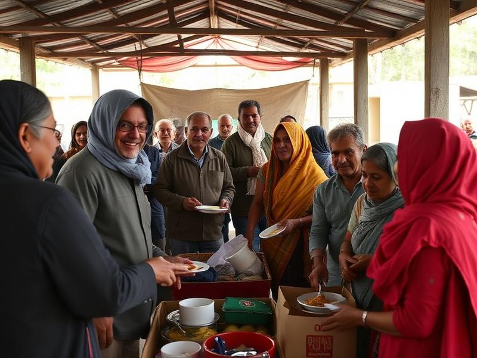
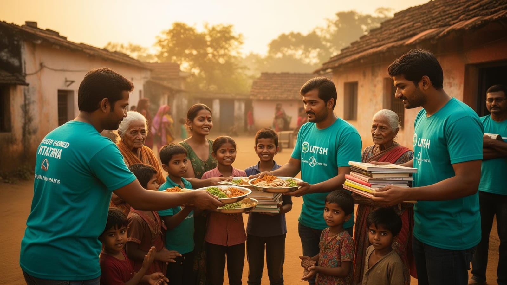
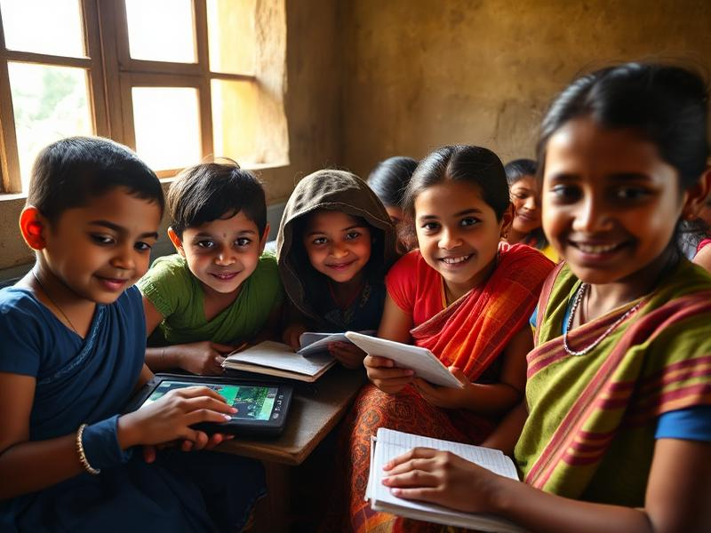
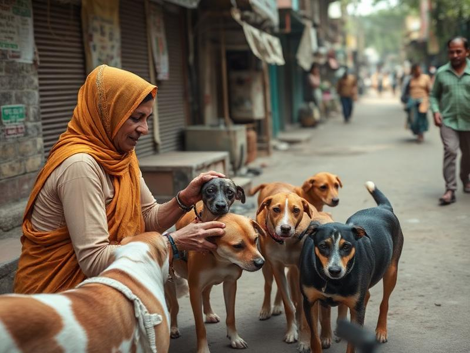
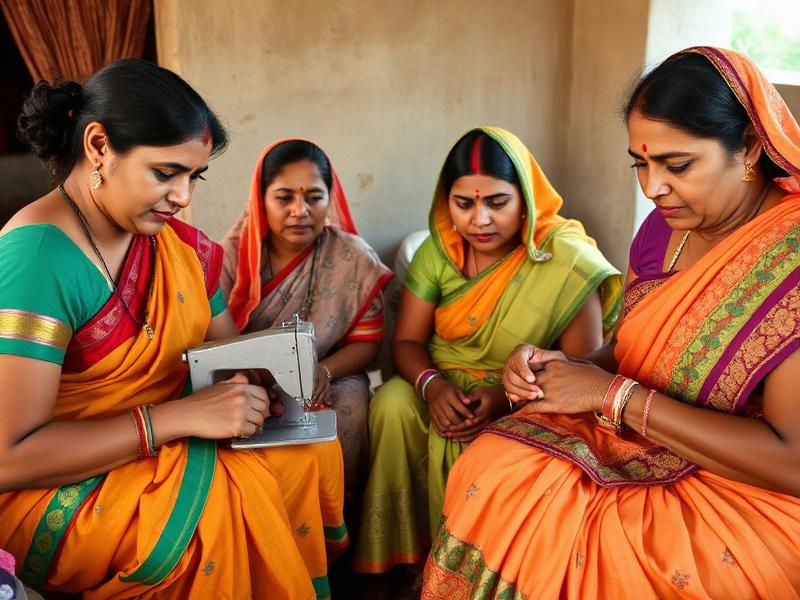
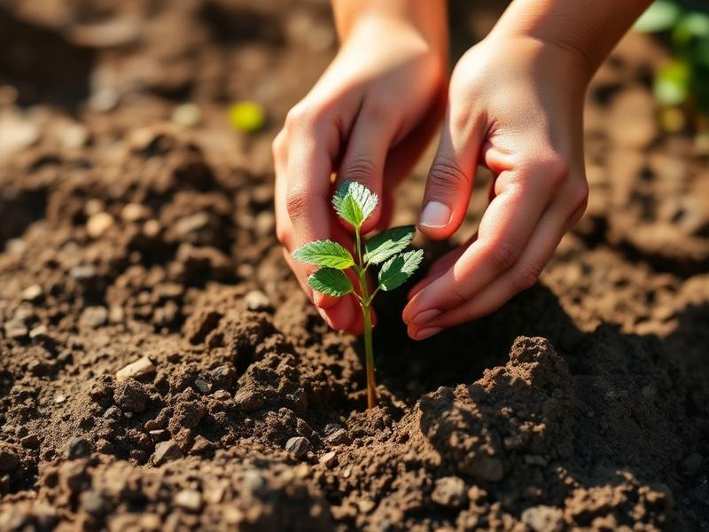

SEVA
Hunger & Relief
Project SEVA
Distributing nutritious meals and essential supplies to the homeless, daily-wage workers, and disaster-affected families.
50,000+ meals served

A youth-driven movement transforming communities through education, sustainability, and service across India.
Founded on September 23, 2020, the InAmigos Foundation is a non-profit organization committed to building a more equitable, educated and sustainable India through grassroots action and youth leadership.
To uplift underserved communities by delivering impactful programs in education, health, environment, women empowerment, and rural development — powered by passionate volunteers.
We blend on-ground initiatives with internship and fellowship programs that engage students and professionals in real social change, creating lasting impact at scale.
India's progress depends on the inclusion of every community. Through six flagship projects, the foundation reaches children, women, elders, animals, and the planet — creating a circle of compassion that grows stronger every year.
5+ years of grassroots impact, 100+ active volunteers, and a nationwide network of changemakers.
Each initiative addresses a critical pillar of social development — from feeding the hungry to nurturing the next generation of leaders.

SEVADistributing nutritious meals and essential supplies to the homeless, daily-wage workers, and disaster-affected families.

BACHPANSHALAFree education centers and learning kits for underprivileged children, focused on literacy, life skills, and confidence.

JEEVFeeding, rescuing and providing medical aid to street animals across cities through community feeding drives.

UDAANSkill-building, menstrual health awareness, and self-reliance programs for women in rural and semi-urban India.

PRAKRITITree plantations, clean-up drives, and sustainability workshops to protect our shared environment.
Internships, fellowships and leadership programs giving 30,000+ students hands-on social impact experience.
Empower communities through service, education and sustainability — one project at a time.
A compassionate India where every individual has the dignity, opportunity and support to thrive.
Integrity, empathy, inclusivity and collective action guide every initiative we lead.
Whether you have an hour, a skill, or a resource to share — there's a place for you at InAmigos Foundation.